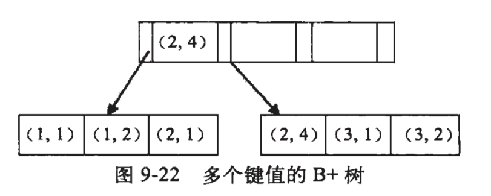

1、最左匹配原理
所谓最左原则指的就是如果你的 SQL 语句中用到了联合索引中的最左边的索引，那么这条 SQL 语句就可以利用这个联合索引去进行匹配，值得注意的是，当遇到范围查询(>、<、between、like)就会停止匹配。
假设，我们对(a,b)字段建立一个索引，也就是说，你where后条件为
1 | a = 1 |
都是可以匹配索引的。但是要注意的是~你执行1
b= 2 and a =1
也是能匹配到索引的，因为Mysql有优化器会自动调整a,b的顺序与索引顺序一致。
相反的，你执行1
b = 2
就匹配不到索引了。
假设，你对(a,b,c,d)建立索引,where后条件为1
a = 1 and b = 2 and c > 3 and d = 4
那么，a,b,c三个字段能用到索引，而d就匹配不到。因为遇到了范围查询！
原理如下，假设，我们对(a,b)字段建立索引，那么入下图所示

如图所示他们是按照a来进行排序，在a相等的情况下，才按b来排序。
因此，我们可以看到a是有序的1，1，2，2，3，3。而b是一种全局无序，局部相对有序状态!
什么意思呢？
从全局来看，b的值为1，2，1，4，1，2，是无序的，因此直接执行b = 2这种查询条件没有办法利用索引。
从局部来看，当a的值确定的时候，b是有序的。例如a = 1时，b值为1，2是有序的状态。当a=2时候，b的值为1,4也是有序状态。
因此，你执行a = 1 and b = 2是a,b字段能用到索引的。而你执行a > 1 and b = 2时，a字段能用到索引，b字段用不到索引。因为a的值此时是一个范围，不是固定的，在这个范围内b值不是有序的，因此b字段用不上索引。
综上所示，最左匹配原则，在遇到范围查询的时候，就会停止匹配。
实战
题型一
如果sql为1
SELECT * FROM table WHERE a = 1 and b = 2 and c = 3;
如何建立索引?
如果此题回答为对(a,b,c)建立索引，那都可以回去等通知了。
此题正确答法是，(a,b,c)或者(c,b,a)或者(b,a,c)都可以，重点要的是将区分度高的字段放在前面，区分度低的字段放后面。像性别、状态这种字段区分度就很低，我们一般放后面。
例如假设区分度由大到小为b,a,c。那么我们就对(b,a,c)建立索引。在执行sql的时候，优化器会 帮我们调整where后a,b,c的顺序，让我们用上索引。
题型二
如果sql为1
SELECT * FROM table WHERE a > 1 and b = 2;
如果此题回答为对(a,b)建立索引，那都可以回去等通知了。
此题正确答法是，对(b,a)建立索引。如果你建立的是(a,b)索引，那么只有a字段能用得上索引，毕竟最左匹配原则遇到范围查询就停止匹配。
如果对(b,a)建立索引那么两个字段都能用上，优化器会帮我们调整where后a,b的顺序，让我们用上索引。
题型三
如果sql为1
SELECT * FROM `table` WHERE a > 1 and b = 2 and c > 3;
如何建立索引?
此题回答也是不一定，(b,a)或者(b,c)都可以，要结合具体情况具体分析。
题型四
1 | SELECT * FROM `table` WHERE a = 1 ORDER BY b; |
对(a,b)建索引，当a = 1的时候，b相对有序，可以避免再次排序！1
SELECT * FROM `table` WHERE a > 1 ORDER BY b;
如何建立索引？
对(a)建立索引，因为a的值是一个范围，这个范围内b值是无序的，没有必要对(a,b)建立索引。
题型五
1 | SELECT * FROM `table` WHERE a IN (1,2,3) and b > 1; |
还是对(a，b)建立索引，因为IN在这里可以视为等值引用，不会中止索引匹配，所以还是(a,b)!